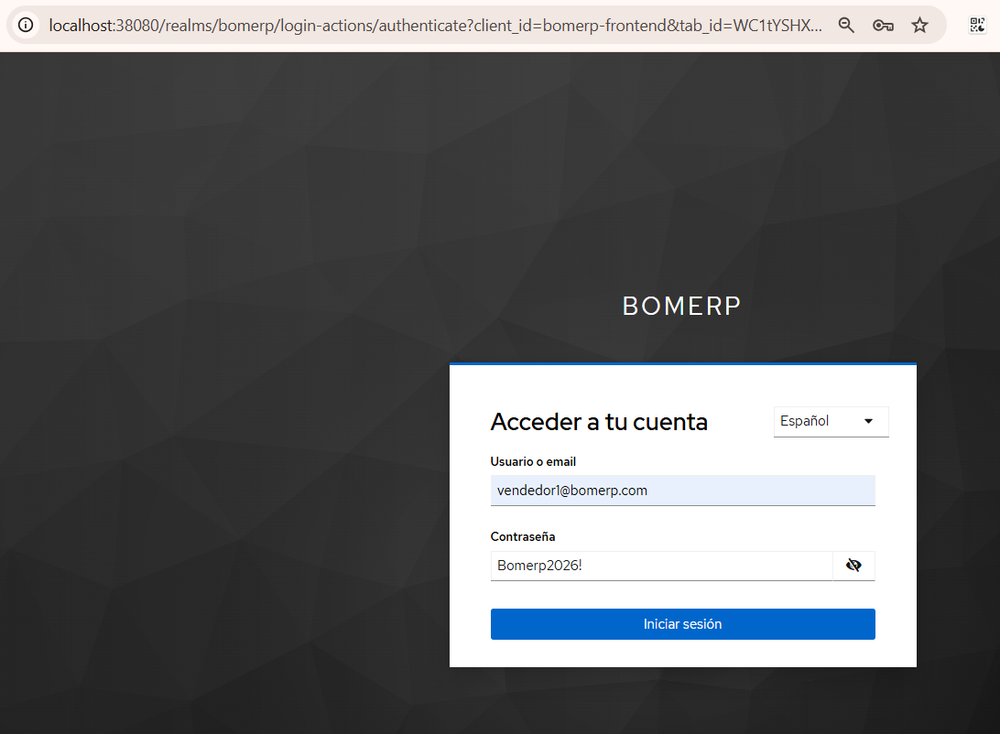

S10 - Reemplazo del módulo seguridad por Keycloak (guía de referencia)¶
Por: Angel Sullon Macalupu @asullom - 2026
0. Qué es esta guía y qué no es¶
Esta guía no corresponde a ninguna fila propia de silabo_lp2_2026_2.md ni de docs/lp2/index.md, y por eso no tiene su propia metodología, caso de motivación ni rúbrica independiente — pero sí es de ejecución obligatoria: es el puente real entre S10_Seguridad_Backend_JWT_Roles.md (que construyó el módulo seguridad deliberadamente temporal y "listo para reemplazo", ADR-005, 2.6 de esa guía, Tabla 4) y S11, que ya asume a Keycloak como el proveedor real, sin seguridad. La decisión de ejecutar este reemplazo ahora —no en U3, como anticipaba ADR-005— es posterior a esa ADR; ADR-005 quedó desactualizada y debería revisarse para reflejar esta decisión, pero mientras tanto esta guía documenta, paso a paso y verificado, lo que de verdad corre hoy: desde descargar Keycloak hasta que bomerp-backend valide tokens suyos en vez de los propios.
Complétala completa, incluida la sección 7, antes de empezar S11 — S11 la exige como prerrequisito explícito. El seguridad de JWT propio que S10 construyó queda como el primer paso pedagógico de este reemplazo (entender la mecánica a mano antes de delegarla), no como lo que corre en la evaluación de S11.
La guía está dividida en tres partes, en el orden en que de verdad hace falta tocar cada pieza:
- Parte A (secciones 2-6) construye y prueba Keycloak solo — realm, cliente, usuarios, un token real inspeccionado, y hasta el flujo completo de login con redirect (6.1). Nada de esto toca
bomerp-backend— ni un archivo, ni un reinicio. - Parte B (7.1-7.2) es el mínimo que deja a
bomerp-backendvalidando tokens de Keycloak: cambiar la propiedad de validación, y —si nunca construisteseguridad— elpom.xmly elSecurityConfig/OpenApiConfigcompletos. Si ya construisteseguridad(3.14-3.15 de S10 ya te dejaronvendedorId/RN8 funcionando), con esto ya alcanza para la sesión:catalogoyventasquedan protegidos por Keycloak de punta a punta. Si fuiste directo a Keycloak, sigue a 7.3. - Parte C (7.3 en adelante) profundiza: 7.3 es indispensable si fuiste directo a Keycloak — agrega
vendedorIdaVentay el filtro por dueño (RN8), que en tu camino nunca se construyó. De 7.4 en adelante, confirma que nada decatalogo/ventascambió si ya teníasseguridad, migra los datos viejos si aplica, retira lo que sobra, y verifica con la matriz completa que cadaVENDEDORsigue viendo solo sus propias ventas mientrasSUPERVISOR/ADMINlas ven todas — ahora con tokens de Keycloak en vez deseguridad.
Requisito real: no necesitas tener seguridad construido ni corriendo — nunca coexiste con Keycloak, uno reemplaza al otro. Lo indispensable de S10 es la lógica de autorización que vive en bomerp-backend y no depende de quién emite el token:
- 3.2 — la columna
VENDEDOR_ID VARCHAR2(36)enVENTAS(elALTER TABLE; la parte de Postgres/seguridadde ese mismo punto no aplica aquí). Verifica el tipo antes de asumir que ya la tienes: la rama congeladas10-seguridad-jwt-rolesla guardó comoNUMBER(diseño previo a ADR-005, antes de decidir quevendedorIdsería texto listo para un UUID) — si es tu caso, el Anexo al final de esta guía trae el código para corregirla, antes de seguir. - 3.3 — solo 2 de las 4 dependencias de
pom.xml:spring-boot-starter-securityyspring-boot-starter-security-oauth2-resource-server. No agreguesspring-security-oauth2-jose(firma JWT — la hace Keycloak, nobomerp-backend) ni el driverpostgresql(era para la BD propia deseguridad). Si nunca construisteseguridad, 7.2 trae el bloque exacto a pegar. - 3.11 — solo el bloque de
OpenApiConfig(el candado Authorize de Swagger). ElSecurityConfigde ese mismo punto (conPasswordEncoder,AuthenticationManager,jwk-set-uri, y lospermitAllde/api/v1/auth/**//.well-known/jwks.json) no aplica tal cual — esos beans y rutas son específicos deseguridad, que nunca existe en tu camino; 7.2 trae la versión directa a Keycloak, sin esos dospermitAll, con las reglas decatalogo/ventasde 3.13/3.15 ya incluidas. - 3.13 — las reglas de
catalogopor rol enSecurityConfig. - 3.14 —
vendedorIdcomoStringenVenta, leído dejwt.getSubject()enVentaController.crear. - 3.15 — las reglas de
ventaspor rol (buscar/obtener/esVendedor,resumen/anular).
Si ya construiste seguridad completo (3.1-3.12, 3.16-3.17) y vas a reemplazarlo paso a paso, parte de ese estado: esta guía lo asume y lo retira en 7.6-7.7 (incluida la migración de datos viejos de 7.5) — 7.3 tampoco aplica, porque S10 (3.14-3.15) ya te lo dejó construido. Si en cambio vas a ir directo a Keycloak sin construir seguridad nunca, las secciones 7.3, 7.5, 7.6 y 7.7 traen notas explícitas de qué aplica y qué no — no hay seguridad/Postgres propio que migrar ni retirar, y los cuatro puntos de arriba se resuelven directo en 7.2-7.3.
Las secciones 1 y 2 de S10 (teoría de JWT/RBAC) y 4-5 (actividad autónoma, cierre) son independientes de cuál camino tomes: se evalúan igual en ambos casos.
1. Qué cambia y qué no¶
Figura 1. Antes y después del reemplazo
flowchart TB
subgraph Antes["S10 (antes)"]
direction TB
ClienteA["Cliente"]
subgraph BackendA["bomerp-backend"]
AuthA["seguridad<br/>emite el JWT"]
SCA["SecurityConfig<br/>jwk-set-uri → localhost:8080"]
end
ClienteA --> AuthA
SCA -.-> AuthA
end
subgraph Despues["Después (esta guía)"]
direction TB
ClienteD["Cliente"]
subgraph BackendD["bomerp-backend"]
SCD["SecurityConfig<br/>issuer-uri → Keycloak"]
end
subgraph KeycloakD["Keycloak"]
KC["realm bomerp<br/>emite el JWT"]
end
ClienteD --> KC
SCD -.-> KC
end
Antes --> Despues1.1 Arquitectura de la sesión¶
Figura 2. Keycloak vive fuera de bomerp-backend, en su propio contenedor; SecurityConfig lo consume por configuración, no por código
flowchart TB
Cliente["Cliente<br/>PowerShell / bash / Swagger"]
subgraph KC["Keycloak (localhost:38080)<br/>contenedor aparte — NO es bomerp-backend"]
direction TB
KCEndpoint["realm bomerp<br/>POST /realms/bomerp/protocol/openid-connect/token"]
end
subgraph BE["bomerp-backend"]
direction TB
SC["SecurityConfig<br/>Resource Server<br/>valida firma + rol"]
Ventas["ventas"]
Catalogo["catalogo"]
SC -->|"4b. rol autorizado<br/>vendedorId = sub"| Ventas
SC -->|"4a. rol autorizado"| Catalogo
end
PG[("Postgres<br/>bomerp-keycloak-db<br/>usuarios, roles")]
ORA[("Oracle<br/>BOM_CATALOGO, BOM_VENTAS")]
Cliente -->|"1. email + password"| KC
KC -->|"2. access_token (JWT, RS256)<br/>sub, realm_access.roles"| Cliente
Cliente -->|"3. Authorization: Bearer JWT"| SC
SC -.->|"issuer-uri<br/>(propiedad de configuración)"| KC
KC --> PG
Ventas --> ORA
Catalogo --> ORALa diferencia con la Figura 2 de S10 (2.1) no es solo el nombre de la caja: ahí seguridad vivía dentro del mismo proceso Spring Boot que ventas/catalogo (un recuadro más, mismo deploy, mismo JVM). Keycloak nunca entra a ese recuadro — es un contenedor aparte, con su propio ciclo de vida y su propio Postgres, y bomerp-backend solo lo conoce por una URL (issuer-uri). Eso es justo lo que vuelve el reemplazo una propiedad de configuración y no un cambio de código: SecurityConfig nunca importa nada de Keycloak, solo le pregunta por HTTP si una firma es válida.
Confirmando lo que ya decía la Tabla 4 de S10 (2.6), ahora con el detalle que faltaba:
Tabla 1. Qué cambia exactamente en bomerp-backend
| Pieza | Cambia |
|---|---|
SecurityConfig (propiedad jwk-set-uri → issuer-uri) |
Sí — una línea de application-dev.yml |
JwtAuthenticationConverter (lee realm_access.roles) |
No — Keycloak emite el claim con el mismo nombre |
catalogo, ventas (controllers, services, reglas hasRole) |
No |
Cómo se lee vendedorId en VentaController |
No — sigue siendo jwt.getSubject(), sin tocar (detalle abajo) |
Paquete seguridad (AuthController, JwtService, JwksController, JwtKeyConfig, entidades) |
Se retira si existía — queda sin uso, ver 7.7 |
Contenedor bomerp-seguridad-db (Postgres) |
Se retira si existía — Keycloak trae su propio almacenamiento |
Ningún punto de la tabla exige cambiar código — y eso no es casualidad, es la razón por la que vendedorId se diseñó como String desde S10 (3.2, 3.14), no como Long: el sub que emite seguridad hoy es el id numérico de Usuario convertido a texto (ej. "3"); el que emite Keycloak es un UUID (Universally Unique Identifier) propio del realm (ej. "3fa85f64-5717-4562-b3fc-2c963f66afa6") — dos formatos de texto distintos, pero VentaController nunca los interpreta como número, solo los guarda tal cual. A diferencia de DIST, que sí necesita un atributo de usuario + protocol mapper para idCliente (S07, Tabla 6, porque idCliente identifica a una entidad de negocio aparte del usuario), aquí vendedorId es literalmente sub — no hace falta configurar nada nuevo en Keycloak para que viaje en el token, porque sub viaja siempre, en cualquier token, sin configuración. Lo único real que exige este cambio de emisor, si ya tenías ventas creadas bajo seguridad, es migrar los datos que ya existen — 7.5 lo resuelve.
Parte A — Keycloak, sin tocar bomerp-backend¶
Las secciones 2 a 6 levantan, configuran y prueban Keycloak de punta a punta. En ningún momento se edita, reinicia ni recompila bomerp-backend — todo lo que sigue hasta el final de la sección 6 se verifica contra Keycloak directamente, con PowerShell/curl/el navegador.
2. Descargar y levantar Keycloak¶
Producto del paso: Keycloak corriendo en modo desarrollo, con su propio Postgres (no el H2 embebido por defecto) y consola de administración accesible.
Agrega los dos servicios a lp2/bomerp-backend/compose-dev.yml — un Postgres propio para Keycloak, igual en espíritu al que S10 ya usó para seguridad (3.2), y el propio Keycloak apuntando a él:
keycloak-db:
image: postgres:17-alpine
container_name: bomerp-keycloak-db
restart: unless-stopped
ports:
- "35432:5432"
environment:
POSTGRES_DB: bomerp_keycloak
POSTGRES_USER: bomerp_keycloak
POSTGRES_PASSWORD: 123456
volumes:
- keycloak-db-data:/var/lib/postgresql/data
healthcheck:
test: ["CMD-SHELL", "pg_isready -U bomerp_keycloak -d bomerp_keycloak"]
interval: 10s
timeout: 5s
retries: 10
start_period: 15s
keycloak:
image: quay.io/keycloak/keycloak:26.8.0
container_name: bomerp-keycloak
restart: unless-stopped
command: start-dev
depends_on:
keycloak-db:
condition: service_healthy
ports:
- "38080:8080"
environment:
KC_BOOTSTRAP_ADMIN_USERNAME: admin
KC_BOOTSTRAP_ADMIN_PASSWORD: admin123
KC_DB: postgres
KC_DB_URL: jdbc:postgresql://keycloak-db:5432/bomerp_keycloak
KC_DB_USERNAME: bomerp_keycloak
KC_DB_PASSWORD: 123456
volumes:
- keycloak-data:/opt/keycloak/data
Y agrega keycloak-data: y keycloak-db-data: junto a oracle-data:, bajo volumes: — seguridad-db-data: solo aparece ahí si seguiste S10 y construiste seguridad (Parte C lo retira en 7.6; si fuiste directo a Keycloak, nunca existió):
volumes:
oracle-data:
keycloak-data:
keycloak-db-data:
cd lp2\bomerp-backend
docker compose -f compose-dev.yml up -d keycloak-db keycloak
cd lp2/bomerp-backend
docker compose -f compose-dev.yml up -d keycloak-db keycloak
KC_DB_URL usa keycloak-db (el nombre del servicio, no localhost) como host: Keycloak y su Postgres se hablan dentro de la red de Docker Compose, por el puerto interno 5432 — el 35432 publicado hacia el host es solo para que tú, desde fuera (psql, una herramienta gráfica), puedas inspeccionarlo si hace falta; bomerp-backend nunca se conecta a keycloak-db directamente. depends_on: condition: service_healthy evita el mismo error que S10 ya documentó para bomerp-seguridad-db (3.2): si Keycloak intenta conectarse antes de que Postgres esté listo, falla al arrancar.
El puerto externo de Keycloak es 38080, no 8080: bomerp-backend ya usa el 8080 en DEV (S1), y Keycloak escucha internamente también en el 8080 de su propio contenedor — anteponer 3 (bomerp) distingue este puerto de cualquier otro servicio similar en otro curso que corra en la misma laptop (mismo criterio ya aplicado a los puertos Postgres entre repos, y ahora también al puerto de keycloak-db, 35432). start-dev es el modo de arranque rápido para desarrollo: no pide configurar TLS ni un hostname explícito — pero con KC_DB apuntando a Postgres, los datos (realm, usuarios, clients) ya no dependen del H2 embebido ni del volumen keycloak-data: viven en keycloak-db-data, igual que oracle-data/seguridad-db-data lo hacen para los otros dos motores. El volumen keycloak-data igual se conserva (Keycloak guarda ahí configuración local propia, no el realm), pero ya no es el único lugar que importa para no perder el trabajo de las secciones 3-6. En producción real sigue faltando un paso más: start (modo production, que exige TLS) en vez de start-dev — el motor de base de datos ya queda resuelto desde esta guía, lo único pendiente para producción real es TLS y el hostname explícito.
KC_BOOTSTRAP_ADMIN_USERNAME/KC_BOOTSTRAP_ADMIN_PASSWORD (Keycloak 26+; versiones anteriores usaban KEYCLOAK_ADMIN/KEYCLOAK_ADMIN_PASSWORD, ya retiradas) solo crean el usuario administrador la primera vez que arranca — cambiarlas después, con el usuario ya creado, no tiene efecto.
Confirma que levantó accediendo a http://localhost:38080 — debe aparecer la pantalla de bienvenida de Keycloak. Entra a la consola de administración (Administration Console) con admin / admin123.
3. Configurar el realm bomerp¶
Producto del paso: un realm propio (no el master por defecto, reservado para administrar Keycloak mismo), con los tres roles que ventas ya usa.
3.0 (Opcional) Español en el Admin Console¶
Conviene hacer esto antes de crear bomerp, para ver el resto de esta guía ya en español. El Admin Console es una sola aplicación compartida por todo Keycloak, no por realm — su idioma sigue la configuración de master, nunca la de bomerp. Con master como realm activo (el único que existe por ahora) → Realm settings → Localization → Locales → activa Internationalization, agrega Spanish a Supported locales, elige Spanish en Default locale → Save. Recarga la página.
Esto solo cambia el menú y los botones que ves tú como administrador — no afecta la pantalla de login que verán tus usuarios (ej. vendedor1@bomerp.com, al autenticarse); esa se configura por separado, en 3.2, una vez creado el realm bomerp. Si solo quieres el Admin Console en español, basta con este paso; si además quieres que la pantalla de login de tus usuarios finales aparezca en español, haz también 3.2.
3.1 Crear el realm y los roles¶
De aquí en adelante, cada referencia a un botón o pestaña de la consola trae el término en inglés (el que usa la documentación oficial de Keycloak) seguido de su traducción aproximada entre paréntesis — si tu consola está en español y el texto exacto no calza del todo, guíate por la posición/ícono, no por la traducción literal: no verifiqué cada cadena contra una consola real en español.
- En el menú lateral izquierdo, entra a Manage realms (Administrar realms) → clic en Create realm (Crear realm).
- Realm name:
bomerp. Deja Resource file vacío (es solo para importar un realm ya exportado como JSON, no aplica aquí). Crear.
Al crearlo, Keycloak cambia solo el realm activo al que acabas de crear — lo ves en la esquina superior izquierda, donde antes decía master ahora dice bomerp (Current realm). No hace falta ningún paso extra para "entrar" a bomerp: todo lo que sigue ya ocurre ahí.
- Con
bomerpcomo realm activo, ve a Realm roles → Create role, y crea los tres, uno por uno:VENDEDOR,SUPERVISOR,ADMIN.
Estos son realm roles (no client roles) a propósito: Keycloak los agrega al token bajo el claim realm_access.roles — el mismo nombre que JwtService de seguridad ya usaba (S10, 3.8) y que JwtAuthenticationConverter ya sabe leer (S10, 3.11). Es el primer punto donde se confirma la promesa de la Tabla 4: cero cambios en ese conversor.
3.2 (Opcional) Español para la pantalla de login de bomerp¶
Con bomerp como realm activo (no master): Realm settings → Localization → Locales → activa Internationalization, agrega Spanish a Supported locales, elige Spanish en Default locale → Save. Es exactamente la misma pantalla de 3.0, pero ahora sobre bomerp — y afecta algo distinto: esta es la que ven tus usuarios al autenticarse, no el Admin Console.
4. Crear el cliente para pruebas¶
Producto del paso: un client en el realm bomerp que permita pedir un token para probar la integración antes de construir la SPA real (S11).
- Clients (Clientes) → Create client (Crear cliente).
- Paso General settings (Configuraciones generales): Client type (Tipo de cliente):
OpenID Connect. Client ID (ID de cliente):bomerp-frontend. Name/Description (Nombre/Descripción): opcionales, déjalos vacíos. Always display in UI (Mostrar siempre en la interfaz de usuario): déjalo desactivado — solo importa si quieres que este cliente aparezca listado en el Account Console de Keycloak incluso sin sesión activa, algo que no necesitas para un cliente de prueba. Siguiente. - Paso Capability config (Configuración de capacidades) — todo en una sola pantalla:
- Client authentication (Autenticación del cliente): desactivado (es un public client — la SPA de S11 no puede guardar un secreto, 2.6 de S10).
- Authorization (Autorización): desactivado — no aplica a esta guía (son los fine-grained authorization services de Keycloak, otra funcionalidad aparte).
- Authentication flow (Flujo de autenticación): deja marcado Standard flow (Flujo estándar, viene activado por defecto — es el que usará S11 con Authorization Code + PKCE) y marca además Direct access grants (Concesiones de acceso directo). Deja el resto de casillas sin marcar.
- Require PKCE (Requiere PKCE) y Require DPoP-bound tokens (Requerir tokens vinculados a DPoP): déjalos en su valor por defecto (desactivado) — ninguno de los dos aplica todavía, porque esta guía no usa el Standard flow para pedir tokens (eso llega en S11); el icono de advertencia junto a Require PKCE es una recomendación general de seguridad de Keycloak, no un error de esta configuración.
- Siguiente.
- Paso Login settings (Configuraciones de inicio de sesión): estos campos son para el Standard flow (redirección de navegador) que usará la SPA real en S11 — Direct access grants, el flujo que prueba esta guía, no pasa por el navegador y no los necesita. Aun así, déjalos ya apuntando a donde correrá la SPA (mismo origen que
bomerp.cors.allowed-originsenapplication-dev.yml, S1):- Root URL/Home URL (URL raíz/URL de inicio): vacío.
- Valid redirect URIs (URIs de redirección válidos):
http://localhost:4200/*. - Valid post logout redirect URIs (URI de redirección de post cierre de sesión válidos):
http://localhost:4200/*. - Web origins (Orígenes web):
http://localhost:4200. - Guardar.
Error frecuente, y por qué es intencional dejarlo así documentado: Direct access grants corresponde al mismo flujo que la RFC 9700 desaconseja (S10, 2.6, cita textual: "MUST NOT be used") — la razón por la que seguridad también lo usaba era la misma: es un atajo de laboratorio, no el diseño final. Úsalo aquí únicamente para verificar que Keycloak emite tokens válidos antes de construir el flujo real; S11 reconfigura este mismo cliente para Authorization Code + PKCE (Proof Key for Code Exchange) y desactiva Direct access grants como parte de ese trabajo — no antes.
5. Crear los usuarios semilla¶
Producto del paso: los mismos cuatro usuarios de S10 (3.10), ahora en Keycloak. vendedorId no necesita ningún paso aparte — es literalmente sub (1, Tabla 1), y sub viaja en cualquier token sin configurar nada.
Por cada uno de vendedor1@bomerp.com, vendedor2@bomerp.com, supervisor@bomerp.com, admin@bomerp.com:
- Users (Usuarios) → Add user (Agregar usuario) → Crear usuario.
- Required user actions (Acciones de usuario requeridas): déjalo vacío, sin seleccionar ninguna. Si marcas algo aquí (ej. Update Password), Keycloak lo exige en el primer login — rompe el flujo de Direct access grants de la sección 6, igual que dejar la contraseña como Temporary (paso 2 de abajo).
- Email verified (Correo electrónico verificado): activado (para no complicar el flujo con verificación de correo en esta guía).
- Select a locale (Seleccionar una configuración regional): opcional, es el idioma de ese usuario en particular (distinto de 3.0/3.2, que son el idioma por defecto del realm) — déjalo en Idioma predeterminado o elige
Españolsi quieres forzarlo para este usuario puntual. - Username (Nombre de usuario): el nombre corto, sin dominio (ej.
vendedor1) — es el identificador que usarás al pedir un token (6), no el email. - Email (Correo electrónico): el email completo (ej.
vendedor1@bomerp.com). - First name/Last name (Nombre/Apellido): no los dejes vacíos — pon cualquier valor real (ej.
Vendedor/Uno). No son cosméticos: el realm trae activaVERIFY_PROFILE(Verify Profile, ver "Error frecuente" abajo), que Keycloak evalúa en cada login — con estos dos campos vacíos, el perfil nunca se considera completo y el login falla, aunque la contraseña sea correcta. - Grupos: opcional, déjalo vacío.
- Crear.
- Pestaña Credentials (Credenciales) → Set password (Establecer contraseña):
Bomerp2026!, Temporary (Temporal): desactivado (si queda activado, Keycloak exige cambiarla en el primer login, lo que rompe el flujo de Direct access grants de la sección 6). - Pestaña Role mapping (Mapeo de roles) → Assign role (Asignar rol) → en el dropdown, elige Realm roles (Roles de realm, no Roles de cliente) — ahí aparece la lista del paso 3 de la sección 3 (
ADMIN,SUPERVISOR,VENDEDOR, más dos roles propios de Keycloak:offline_access,uma_authorization, que no tocas). MarcaVENDEDORpara los dos primeros usuarios,SUPERVISORyADMINpara los otros dos, respectivamente, y Asignar — el mismo criterio de promoción manual que S10 ya aplicaba a mano sobre Postgres (3.10), ahora sobre la consola de Keycloak.
Error frecuente: login en la sección 6 responde {"error":"invalid_grant","error_description":"Account is not fully set up"}, aunque el usuario no tenga ninguna required action explícita en la pestaña Details, la contraseña no sea Temporary, y ningún required action del realm esté marcado como default (SELECT ... FROM required_action_provider da default_action = f en todas). La causa real: VERIFY_PROFILE (Verify Profile) viene enabled en este realm, y esa acción se calcula dinámicamente en cada login, no como fila guardada — revisa si first_name/last_name quedaron vacíos (si usaste la consola en vez de la API, puede pasar aunque los hayas escrito):
docker exec -i bomerp-keycloak-db psql -U bomerp_keycloak -d bomerp_keycloak -c "SELECT email, first_name, last_name, email_verified FROM user_entity WHERE email = 'vendedor1@bomerp.com';"
(Opcional, solo si el SELECT de arriba muestra algo vacío) — si seguiste el paso 1 tal cual (First name/Last name ya llenos), esto no debería hacer falta. Corrige lo que falte (ejemplo con los cuatro usuarios — ajusta los nombres):
docker exec -i bomerp-keycloak-db psql -U bomerp_keycloak -d bomerp_keycloak -c "
UPDATE user_entity SET first_name = 'Vendedor', last_name = 'Uno', email_verified = true WHERE email = 'vendedor1@bomerp.com';
UPDATE user_entity SET first_name = 'Vendedor', last_name = 'Dos', email_verified = true WHERE email = 'vendedor2@bomerp.com';
UPDATE user_entity SET first_name = 'Supervisor', last_name = 'Uno', email_verified = true WHERE email = 'supervisor@bomerp.com';
UPDATE user_entity SET first_name = 'Admin', last_name = 'Uno', email_verified = true WHERE email = 'admin@bomerp.com';
"
docker exec -i bomerp-keycloak-db psql -U bomerp_keycloak -d bomerp_keycloak -c "UPDATE user_entity SET first_name = 'Vendedor', last_name = 'Uno', email_verified = true WHERE email = 'vendedor1@bomerp.com'; UPDATE user_entity SET first_name = 'Vendedor', last_name = 'Dos', email_verified = true WHERE email = 'vendedor2@bomerp.com'; UPDATE user_entity SET first_name = 'Supervisor', last_name = 'Uno', email_verified = true WHERE email = 'supervisor@bomerp.com'; UPDATE user_entity SET first_name = 'Admin', last_name = 'Uno', email_verified = true WHERE email = 'admin@bomerp.com';"
(Opcional, solo si corriste el UPDATE directo por SQL de arriba) — crear o editar un usuario desde la consola nunca necesita esto, Keycloak lo aplica al instante; el reinicio es solo por precaución tras tocar keycloak-db por fuera de la aplicación (no confirmé si cachea en memoria o no, pero es gratis hacerlo y evita dudarlo):
docker restart bomerp-keycloak
6. Verificar el token antes de tocar bomerp-backend¶
Producto del paso: confirmación, con un token real, de que realm_access.roles llega con el formato esperado y sub es el UUID del usuario — antes de cambiar nada en el código.
$login = Invoke-RestMethod -Method Post -Uri "http://localhost:38080/realms/bomerp/protocol/openid-connect/token" `
-ContentType "application/x-www-form-urlencoded" `
-Body "grant_type=password&client_id=bomerp-frontend&username=vendedor1&password=Bomerp2026!"
$login.access_token
curl -X POST http://localhost:38080/realms/bomerp/protocol/openid-connect/token \
-H "Content-Type: application/x-www-form-urlencoded" \
-d "grant_type=password&client_id=bomerp-frontend&username=vendedor1&password=Bomerp2026!"
Pega el access_token recibido en jwt.io (inspección visual únicamente, 2.3 de S10) y confirma dos cosas: realm_access.roles trae ["VENDEDOR"]; y sub es un UUID, no el "3" de antes — exactamente la diferencia que la sección 1 anticipó.
POST /realms/bomerp/protocol/openid-connect/token es el endpoint estándar de token de Keycloak (OAuth 2.0/OpenID Connect, S10 2.6) — equivalente a POST /api/v1/auth/login de seguridad, pero ya no es un endpoint propio de BomERP.
Error frecuente: comparar el expires_in de este token con el de seguridad y asumir que algo está mal. Por defecto, el realm nuevo trae el access token del propio Keycloak (Realm settings → Tokens → Access Token Lifespan) en 5 minutos, no en la hora que jwt.expiracion-segundos dejaba en S10 (3.8) — token expirado a mitad de una prueba no es un bug de la integración, solo un valor por defecto distinto. Ajusta ese campo en el realm si las pruebas de la sección 8 te quedan cortas de tiempo.
6.1 (Opcional) Simular el login real, con redirect¶
Producto del paso: ver, con tus propios ojos, el flujo Authorization Code que usará la SPA en S11 — el que sí redirige al navegador a la pantalla de Keycloak, en vez del Direct Access Grant (atajo de laboratorio) que usaste en el resto de esta guía. Sigue sin tocar bomerp-backend.
No hace falta construir la SPA para verlo: el cliente bomerp-frontend ya tiene Standard flow activado (4, paso 3) y http://localhost:4200/* como redirect URI válido (4, paso 4), aunque todavía no haya nada corriendo ahí.
- Arma la URL de autorización a mano y ábrela en el navegador:
http://localhost:38080/realms/bomerp/protocol/openid-connect/auth?client_id=bomerp-frontend&redirect_uri=http://localhost:4200/callback&response_type=code&scope=openid
- Verás la pantalla de login del realm
bomerp(nomaster— si te aparece pidiendoadmin, revisa que la URL diga/realms/bomerp/..., no/realms/master/...). Entra convendedor1@bomerp.com/Bomerp2026!.
Figura 3. Pantalla de login de Keycloak para el realm bomerp

Nota la URL de la barra de direcciones: localhost:38080/realms/bomerp/... — confirma que el formulario lo sirve Keycloak, no bomerp-backend ni ninguna SPA propia (a diferencia del login de seguridad, S10 3.10, que era un formulario de BomERP).
-
El navegador intenta redirigir a
http://localhost:4200/callback?code=...&state=...— como ahí no hay ninguna SPA corriendo todavía, la pestaña muestra error de conexión. Eso es esperado: lo que importa es la URL a la que llegó. Cópiala de la barra de direcciones y mira el parámetrocode— esa es la prueba de que el flujo completo (login en Keycloak → redirect de vuelta con un código) ya funciona de punta a punta, sin quebomerp-backendni ninguna SPA hayan intervenido todavía. -
(Opcional) Cambia ese
codepor un token real, a mano, antes de que expire (son pocos segundos a minutos):
$code = "<pega aquí el valor de code de la URL>"
$login2 = Invoke-RestMethod -Method Post -Uri "http://localhost:38080/realms/bomerp/protocol/openid-connect/token" `
-ContentType "application/x-www-form-urlencoded" `
-Body "grant_type=authorization_code&client_id=bomerp-frontend&redirect_uri=http://localhost:4200/callback&code=$code"
$login2.access_token
curl -X POST http://localhost:38080/realms/bomerp/protocol/openid-connect/token \
-H "Content-Type: application/x-www-form-urlencoded" \
-d "grant_type=authorization_code&client_id=bomerp-frontend&redirect_uri=http://localhost:4200/callback&code=<pega aquí el code>"
Lo que S11 construye de verdad es que la SPA, corriendo en localhost:4200, capture ese code sola (sin que tú lo copies a mano) y haga este último intercambio automáticamente, además de agregar PKCE (4, paso 3, Require PKCE) — esta sección solo demuestra que el mecanismo de fondo ya está activo desde ahora, sin tocar ni una línea de bomerp-backend.
- (Opcional) Cambiar de usuario o cerrar sesión. Si repites la URL del paso 1 tal cual, Keycloak reconoce la cookie de sesión que ya tienes y te deja pasar sin pedir login de nuevo (es SSO funcionando, no un error) — para probar con otro usuario necesitas una de estas dos:
Cerrar la sesión de Keycloak:
http://localhost:38080/realms/bomerp/protocol/openid-connect/logout?client_id=bomerp-frontend&post_logout_redirect_uri=http://localhost:4200
O forzar un login nuevo sin cerrar la sesión existente, agregando &prompt=login a la URL del paso 1:
http://localhost:38080/realms/bomerp/protocol/openid-connect/auth?client_id=bomerp-frontend&redirect_uri=http://localhost:4200/callback&response_type=code&scope=openid&prompt=login
- (Opcional) Probar el refresh token. Tanto el paso 4 de aquí (Authorization Code) como el token de la sección 6 (Direct Access Grant) ya incluyen un
refresh_tokenen la respuesta, sin configurar nada extra en Keycloak — revísalo:
$login2 | ConvertTo-Json
Cámbialo por un access_token nuevo, sin volver a pedir usuario/contraseña — es justo lo que una SPA real hace sola, en segundo plano, poco antes de que el token actual expire:
$refreshed = Invoke-RestMethod -Method Post -Uri "http://localhost:38080/realms/bomerp/protocol/openid-connect/token" `
-ContentType "application/x-www-form-urlencoded" `
-Body "grant_type=refresh_token&client_id=bomerp-frontend&refresh_token=$($login2.refresh_token)"
$refreshed.access_token
refreshedAccessToken=$(curl -s -X POST http://localhost:38080/realms/bomerp/protocol/openid-connect/token \
-H "Content-Type: application/x-www-form-urlencoded" \
-d "grant_type=refresh_token&client_id=bomerp-frontend&refresh_token=$refreshToken" | jq -r '.access_token')
bomerp-backend nunca ve ni usa el refresh_token — es un Resource Server, solo valida access_token en cada request. El refresco es trabajo exclusivo del cliente (la SPA en S11, vía keycloak-js/angular-oauth2-oidc), nunca del backend.
Parte B — Integrar bomerp-backend con Keycloak¶
A partir de aquí sí se edita, recompila y reinicia bomerp-backend — todo sobre el Keycloak que la Parte A ya dejó funcionando y verificado. Parte B termina en 7.2: con la propiedad de validación cambiada y (si aplica) pom.xml/SecurityConfig/OpenApiConfig en su lugar, bomerp-backend ya valida tokens de Keycloak — ya alcanza para la sesión si ya construiste seguridad (3.14-3.15 de S10 ya te dejaron vendedorId/RN8 funcionando). Si vas directo a Keycloak, sigue hasta 7.3: ahí es indispensable, es donde ventas aprende por primera vez de quién es cada venta. De 7.4 en adelante, Parte C es la profundización: confirmar, migrar, retirar lo que sobra, y verificar con la matriz completa que ventas sigue filtrando por dueño.
7. Integrar bomerp-backend con Keycloak¶
Producto del paso: SecurityConfig valida tokens de Keycloak; catalogo y ventas siguen funcionando sin que se les toque una línea.
7.1 Cambiar la propiedad de validación¶
Si ya construiste seguridad y tenías jwk-set-uri configurado (S10, 3.11), reemplaza ese bloque en lp2/bomerp-backend/src/main/resources/application-dev.yml:
spring:
security:
oauth2:
resourceserver:
jwt:
jwk-set-uri: http://localhost:8080/.well-known/jwks.json
por:
spring:
security:
oauth2:
resourceserver:
jwt:
issuer-uri: http://localhost:38080/realms/bomerp
Si nunca construiste seguridad, no hay nada que reemplazar — agrega el bloque de issuer-uri directamente, es la única propiedad de seguridad que application-dev.yml necesita.
Con issuer-uri (en vez de jwk-set-uri), Spring no solo descubre dónde están las claves — además valida que el claim iss (issuer, emisor) de cada token coincida exactamente con esta URL, y descarga la configuración del realm (incluida su ubicación de JWKS) del documento de descubrimiento estándar de OpenID Connect (/.well-known/openid-configuration) que Keycloak sí publica (a diferencia de seguridad, que no lo implementaba — S10, 2.6).
7.2 Agregar las dependencias y escribir SecurityConfig/OpenApiConfig (si vas directo a Keycloak)¶
Solo si nunca construiste seguridad. Si ya la tenías y la estás reemplazando paso a paso, ya tienes pom.xml (S10, 3.3), SecurityConfig (S10, 3.11) y vendedorId/RN8 (S10, 3.14-3.15) — salta directo a 7.4, y pasa por 7.7 más abajo para limpiar lo que sobra.
pom.xml — agrega, dentro de <dependencies>, solo estas dos (sin <version>, las gestiona spring-boot-starter-parent, ADR-003):
<dependency>
<groupId>org.springframework.boot</groupId>
<artifactId>spring-boot-starter-security</artifactId>
</dependency>
<dependency>
<groupId>org.springframework.boot</groupId>
<artifactId>spring-boot-starter-security-oauth2-resource-server</artifactId>
</dependency>
No agregues spring-security-oauth2-jose (sirve para firmar JWT; Keycloak firma los suyos, bomerp-backend nunca firma nada) ni el driver postgresql (era solo para la BD propia de seguridad, que nunca existe en este camino).
lp2/bomerp-backend/src/main/java/pe/edu/upeu/bomerp/SecurityConfig.java (archivo nuevo):
package pe.edu.upeu.bomerp;
import org.springframework.context.annotation.Bean;
import org.springframework.context.annotation.Configuration;
import org.springframework.http.HttpMethod;
import org.springframework.security.config.annotation.web.builders.HttpSecurity;
import org.springframework.security.config.http.SessionCreationPolicy;
import org.springframework.security.core.GrantedAuthority;
import org.springframework.security.core.authority.SimpleGrantedAuthority;
import org.springframework.security.oauth2.server.resource.authentication.JwtAuthenticationConverter;
import org.springframework.security.web.SecurityFilterChain;
import java.util.Collection;
import java.util.List;
import java.util.Map;
@Configuration
public class SecurityConfig {
@Bean
public JwtAuthenticationConverter jwtAuthenticationConverter() {
JwtAuthenticationConverter converter = new JwtAuthenticationConverter();
converter.setJwtGrantedAuthoritiesConverter(jwt -> {
Map<String, Object> realmAccess = jwt.getClaimAsMap("realm_access");
Object roles = realmAccess == null ? null : realmAccess.get("roles");
if (!(roles instanceof Collection<?> lista)) {
return List.<GrantedAuthority>of();
}
return lista.stream()
.map(rol -> (GrantedAuthority) new SimpleGrantedAuthority("ROLE_" + rol))
.toList();
});
return converter;
}
@Bean
public SecurityFilterChain securityFilterChain(HttpSecurity http,
JwtAuthenticationConverter jwtAuthenticationConverter) throws Exception {
http
.cors(cors -> {})
.csrf(csrf -> csrf.disable())
.sessionManagement(session -> session.sessionCreationPolicy(SessionCreationPolicy.STATELESS))
.authorizeHttpRequests(auth -> auth
.requestMatchers("/actuator/**", "/swagger-ui.html", "/swagger-ui/**", "/v3/api-docs/**").permitAll()
.requestMatchers(HttpMethod.GET, "/api/v1/productos/**", "/api/v1/categorias/**").authenticated()
.requestMatchers(HttpMethod.POST, "/api/v1/productos/**", "/api/v1/categorias/**").hasRole("ADMIN")
.requestMatchers(HttpMethod.PUT, "/api/v1/productos/**", "/api/v1/categorias/**").hasRole("ADMIN")
.requestMatchers(HttpMethod.DELETE, "/api/v1/productos/**", "/api/v1/categorias/**").hasRole("ADMIN")
.requestMatchers(HttpMethod.POST, "/api/v1/ventas").hasAnyRole("VENDEDOR", "SUPERVISOR")
.requestMatchers(HttpMethod.GET, "/api/v1/ventas/resumen").hasAnyRole("SUPERVISOR", "ADMIN")
.requestMatchers(HttpMethod.PATCH, "/api/v1/ventas/*/anular").hasAnyRole("SUPERVISOR", "ADMIN")
.requestMatchers("/api/v1/ventas/**").hasAnyRole("VENDEDOR", "SUPERVISOR", "ADMIN")
.anyRequest().authenticated()
)
.oauth2ResourceServer(oauth2 -> oauth2
.jwt(jwt -> jwt.jwtAuthenticationConverter(jwtAuthenticationConverter)));
return http.build();
}
}
Compara esta versión con la de S10 (3.11): no hay PasswordEncoder ni AuthenticationManager (nadie hace login contra una base local), y no hay permitAll para /api/v1/auth/** ni /.well-known/jwks.json — ninguno de los dos existe en este camino, no hay nada que dejar abierto ahí. Las reglas por rol de catalogo (S10, 3.13) y ventas (S10, 3.15) ya están ahí, antes de .anyRequest().authenticated(), exactamente como en S10 — copiadas tal cual, sin que el cambio de emisor les toque una línea. Con esto, Parte B ya protege de verdad por rol, no solo exige un token válido: Parte C (RN8) prueba precisamente esa distinción con tokens de Keycloak.
El .cors(cors -> {}) es el mismo de S10 (3.11) — si fuiste directo a Keycloak y nunca pasaste por esa sección, también necesitas CorsConfig.java en su versión de bean (CorsConfigurationSource, no WebMvcConfigurer): sin ella, .cors(cors -> {}) no tiene qué registrar y el preflight del navegador sigue bloqueado igual. Copia la versión de S10 (3.11) tal cual, antes de levantar bomerp-frontend contra este backend.
lp2/bomerp-backend/src/main/java/pe/edu/upeu/bomerp/OpenApiConfig.java (archivo nuevo — el candado de Swagger, mismo patrón que pagatu-orden-ms en DIST S07):
package pe.edu.upeu.bomerp;
import io.swagger.v3.oas.models.Components;
import io.swagger.v3.oas.models.OpenAPI;
import io.swagger.v3.oas.models.info.Info;
import io.swagger.v3.oas.models.security.SecurityRequirement;
import io.swagger.v3.oas.models.security.SecurityScheme;
import org.springframework.context.annotation.Bean;
import org.springframework.context.annotation.Configuration;
@Configuration
public class OpenApiConfig {
private static final String ESQUEMA_JWT = "bearerAuth";
@Bean
OpenAPI bomErpOpenApi() {
return new OpenAPI()
.info(new Info()
.title("BomERP API")
.version("v1")
.description("Contrato REST del backend unico de LP2"))
.components(new Components().addSecuritySchemes(ESQUEMA_JWT,
new SecurityScheme()
.type(SecurityScheme.Type.HTTP)
.scheme("bearer")
.bearerFormat("JWT")))
.addSecurityItem(new SecurityRequirement().addList(ESQUEMA_JWT));
}
}
Con esto, Swagger UI (http://localhost:8080/swagger-ui.html) muestra el botón Authorize arriba a la derecha — pega ahí el access_token de la sección 6 (sin el prefijo Bearer, Swagger lo agrega solo) y cada "Try it out" manda el header automáticamente, incluso contra rutas protegidas.
Parte C — Profundizar: cerrar la migración y verificar que ventas filtra por dueño¶
Lo construido hasta 7.2 deja a bomerp-backend validando tokens de Keycloak, pero ventas todavía no sabe de quién es cada venta. 7.3 sí es indispensable si vas directo a Keycloak (sección 0 ya lo marca: 3.14-3.15 de S10) — sin ella, crear nunca guarda vendedorId, y RN8 no existe. De 7.4 en adelante, en cambio, es la profundización que confirma que el reemplazo no rompió nada y verifica RN8 (VENDEDOR ve solo sus propias ventas, SUPERVISOR/ADMIN las ven todas) con tokens reales de Keycloak en vez de los de seguridad.
7.3 Agregar vendedorId a Venta y filtrar ventas por dueño (si vas directo a Keycloak)¶
Solo si nunca construiste seguridad. Si ya la tenías, S10 (3.14-3.15) ya dejó esto construido exactamente igual — salta a 7.4.
Producto del paso: VENTAS gana la columna VENDEDOR_ID; Venta tiene vendedorId; crear lo toma del claim sub del JWT ya validado (RN5, ADS S8); buscar/obtener filtran por dueño cuando el rol es VENDEDOR (RN8); un VENDEDOR que pide, por id, una venta ajena recibe 403, no 404.
Primero, la columna — si ya la verificaste en el Anexo (porque salió NUMBER en tu rama), sáltate esto, ya quedó en VARCHAR2(36):
@'
ALTER TABLE VENTAS ADD VENDEDOR_ID VARCHAR2(36);
'@ | docker exec -i bomerp-oracle bash -c "sqlplus -s BOM_VENTAS/123456@localhost:1521/FREEPDB1"
docker exec -i bomerp-oracle bash -c "sqlplus -s BOM_VENTAS/123456@localhost:1521/FREEPDB1" <<'EOF'
ALTER TABLE VENTAS ADD VENDEDOR_ID VARCHAR2(36);
EOF
Sin NOT NULL a propósito: las ventas creadas en S4-S9 (antes de que existiera cualquier autenticación) quedan con esta columna en NULL, y eso está bien — no se reescribe el pasado. Toda venta creada desde hoy en adelante sí la trae, porque el propio servicio la completa (más abajo).
lp2/bomerp-backend/.../ventas/venta/entity/Venta.java — agrega el campo:
@Column(name = "VENDEDOR_ID", length = 36)
private String vendedorId;
VentaController.crear — reemplaza la firma del método:
@PostMapping
@ResponseStatus(HttpStatus.CREATED)
public VentaResponse crear(@Valid @RequestBody VentaRequest request, @AuthenticationPrincipal Jwt jwt) {
String vendedorId = jwt.getSubject();
return ventaService.crear(request, vendedorId);
}
Agrega los imports:
import org.springframework.security.core.annotation.AuthenticationPrincipal;
import org.springframework.security.oauth2.jwt.Jwt;
VentaService — actualiza la firma:
VentaResponse crear(VentaRequest request, String vendedorId);
VentaServiceImpl.crear — recibe vendedorId aparte y lo asigna a la cabecera; el resto del método (validar cada línea, descontar stock, calcular el total) no tiene ninguna relación con vendedorId y queda intacto:
@Override
@Transactional
public VentaResponse crear(VentaRequest request, String vendedorId) {
Venta venta = new Venta();
venta.setFecha(LocalDateTime.now());
venta.setEstado(EstadoVenta.REGISTRADA);
venta.setVendedorId(vendedorId);
// el resto del método sigue exactamente igual que en S9
jwt.getSubject() entrega el claim sub como texto, directo del UUID que emite Keycloak — vendedorId se guarda tal cual, sin convertir a número. VentaRequest nunca tiene un campo vendedorId (a diferencia de idCliente en DIST, que sí hay que quitar de OrdenRequest): este dato nunca llega por un canal que el cliente controle, siempre por el claim del token.
RN8 (un VENDEDOR solo ve sus propias ventas) no se resuelve por ruta — las tres roles pueden llamar a buscar/obtener, pero el contenido que cada uno ve depende de su identidad, no solo de su rol (ABAC). Eso se resuelve dentro del servicio. VentaController — agrega @AuthenticationPrincipal Jwt jwt a buscar y obtener, y pasa el rol/vendedorId al servicio:
@GetMapping
public ResponseEntity<List<VentaResponse>> buscar(
@RequestParam(required = false) EstadoVenta estado,
@RequestParam(required = false) @DateTimeFormat(iso = DateTimeFormat.ISO.DATE_TIME) LocalDateTime desde,
@RequestParam(required = false) @DateTimeFormat(iso = DateTimeFormat.ISO.DATE_TIME) LocalDateTime hasta,
@RequestParam(defaultValue = "fecha") String ordenarPor,
@RequestParam(defaultValue = "DESC") String direccion,
@AuthenticationPrincipal Jwt jwt) {
String vendedorId = esVendedor(jwt) ? jwt.getSubject() : null;
return ResponseEntity.ok(ventaService.buscar(estado, desde, hasta, ordenarPor, direccion, vendedorId));
}
@GetMapping("/{id}")
public ResponseEntity<VentaResponse> obtener(@PathVariable Long id, @AuthenticationPrincipal Jwt jwt) {
String vendedorId = esVendedor(jwt) ? jwt.getSubject() : null;
return ResponseEntity.ok(ventaService.obtener(id, vendedorId));
}
private boolean esVendedor(Jwt jwt) {
Map<String, Object> realmAccess = jwt.getClaim("realm_access");
Object roles = realmAccess == null ? null : realmAccess.get("roles");
return roles instanceof Collection<?> lista && lista.contains("VENDEDOR");
}
Diferencia real con S10 (3.15), no cosmética: ahí esVendedor exigía además lista.size() == 1 — funcionaba porque JwtService de seguridad (3.8) solo agregaba el rol real, nada más. Keycloak no: realm_access.roles de cualquier usuario trae, además de VENDEDOR, los roles propios del realm (offline_access, uma_authorization, sección 5) — el tamaño de la lista nunca es 1. Con esa condición, esVendedor devolvería false siempre, vendedorId quedaría null para todos, y RN8 dejaría de filtrar nada — un VENDEDOR vería todas las ventas, en silencio, sin ningún error que lo delate. lista.contains("VENDEDOR") solo pregunta por el rol que importa, sin importar qué más traiga la lista.
Agrega los imports que faltan (AuthenticationPrincipal/Jwt ya quedaron arriba; Map/Collection son nuevos en este archivo, los necesita esVendedor):
import java.util.Collection;
import java.util.Map;
vendedorId llega null para SUPERVISOR/ADMIN (ven todas) y con un valor real solo para VENDEDOR. Actualiza VentaService/VentaServiceImpl:
List<VentaResponse> buscar(EstadoVenta estado, LocalDateTime desde, LocalDateTime hasta,
String ordenarPor, String direccion, String vendedorId);
VentaResponse obtener(Long id, String vendedorId);
@Override
@Transactional(readOnly = true)
public List<VentaResponse> buscar(EstadoVenta estado, LocalDateTime desde, LocalDateTime hasta,
String ordenarPor, String direccion, String vendedorId) {
Sort.Direction dir = "ASC".equalsIgnoreCase(direccion) ? Sort.Direction.ASC : Sort.Direction.DESC;
Sort sort = Sort.by(dir, ordenarPor);
return ventaRepository.buscar(estado, desde, hasta, vendedorId, sort).stream()
.map(ventaMapper::toResponse).toList();
}
@Override
@Transactional(readOnly = true)
public VentaResponse obtener(Long id, String vendedorId) {
Venta venta = ventaRepository.findById(id)
.orElseThrow(() -> new ResourceNotFoundException("Venta no encontrada: " + id));
if (vendedorId != null && !vendedorId.equals(venta.getVendedorId())) {
throw new AccesoDenegadoException("No tienes acceso a esta venta");
}
return ventaMapper.toResponse(venta);
}
VentaRepository.buscar gana un parámetro String vendedorId (null = sin filtrar), condición opcional dentro del propio @Query:
@EntityGraph(attributePaths = "detalles")
@Query("""
SELECT v FROM Venta v
WHERE (:estado IS NULL OR v.estado = :estado)
AND (:desde IS NULL OR v.fecha >= :desde)
AND (:hasta IS NULL OR v.fecha <= :hasta)
AND (:vendedorId IS NULL OR v.vendedorId = :vendedorId)
""")
List<Venta> buscar(@Param("estado") EstadoVenta estado,
@Param("desde") LocalDateTime desde,
@Param("hasta") LocalDateTime hasta,
@Param("vendedorId") String vendedorId,
Sort sort);
Con vendedorId = null (SUPERVISOR/ADMIN) la condición :vendedorId IS NULL OR ... siempre es verdadera y no filtra nada — ven todas las ventas. Con un valor real (VENDEDOR), filtra solo las suyas. resumen no necesita este parámetro: ya está restringido a SUPERVISOR/ADMIN en SecurityConfig (7.2), ningún VENDEDOR llega a llamarlo.
Crea AccesoDenegadoException (en pe.edu.upeu.bomerp.exception, mismo paquete que ResourceNotFoundException) y su manejador en GlobalExceptionHandler, respondiendo 403:
lp2/bomerp-backend/src/main/java/pe/edu/upeu/bomerp/exception/AccesoDenegadoException.java:
package pe.edu.upeu.bomerp.exception;
public class AccesoDenegadoException extends RuntimeException {
public AccesoDenegadoException(String mensaje) {
super(mensaje);
}
}
@ExceptionHandler(AccesoDenegadoException.class)
public ResponseEntity<Map<String, Object>> handleAccesoDenegado(AccesoDenegadoException ex) {
Map<String, Object> body = new HashMap<>();
body.put("timestamp", Instant.now().toString());
body.put("status", HttpStatus.FORBIDDEN.value());
body.put("error", "Forbidden");
body.put("message", ex.getMessage());
return ResponseEntity.status(HttpStatus.FORBIDDEN).body(body);
}
Mismo patrón que el resto de GlobalExceptionHandler (Map<String, Object> con timestamp/status/error/message), no uno nuevo de un solo campo. Responder 403 (y no 404) cuando un VENDEDOR pide, por id, una venta ajena es deliberado: 403 le dice "existe, pero no es tuya"; 404 escondería incluso esa información.
7.4 Confirmar que catalogo y ventas no se tocan¶
Revisa SecurityConfig.securityFilterChain, CategoriaController/ProductoController y todo VentaController, incluido crear/buscar/obtener: ningún hasRole, ningún requestMatchers, ninguna línea de código cambia por el solo hecho de que el emisor del token sea distinto — jwt.getSubject() sigue ahí exactamente igual que en S10 (3.14-3.15), porque vendedorId nunca se interpretó como número (1). Si ya construiste seguridad y encuentras que necesitas tocar algo ahí, la migración se desvió de lo que esta guía describe — revisa 7.1.
7.5 Migrar las ventas ya registradas al nuevo sub¶
Solo si ya construiste seguridad y tiene ventas reales creadas bajo ese módulo. Si fuiste directo a Keycloak (7.2-7.3), no hay ningún dato viejo que migrar — salta a 7.6.
Producto del paso: las ventas que vendedor1/vendedor2 ya crearon bajo seguridad (S10) siguen asociadas a su dueño real, ahora con el sub nuevo de Keycloak.
vendedorId no necesita ningún atributo ni protocol mapper — es jwt.getSubject() tal cual (1). Pero eso no resuelve solo el dato que ya existe: cada fila de VENTAS creada hasta hoy tiene VENDEDOR_ID con el id numérico-como-texto que seguridad usaba (ej. "3"), y el sub que Keycloak va a emitir para ese mismo usuario es un UUID distinto (ej. "3fa85f64-5717-4562-b3fc-2c963f66afa6") — nadie los conecta solo. Sin este paso, esas ventas viejas siguen existiendo, pero obtener/buscar (S10, 3.15) ya no las reconoce como propias de ese vendedor.
- Obtén el
idviejo de cada usuario (todavía enbomerp-seguridad-db, antes de 7.6):
docker exec -i bomerp-seguridad-db psql -U bomerp_seguridad -d bomerp_seguridad -c "SELECT id, email FROM usuarios WHERE email IN ('vendedor1@bomerp.com','vendedor2@bomerp.com','supervisor@bomerp.com','admin@bomerp.com');"
- Obtén el UUID nuevo de cada usuario, directo de
keycloak-db(el Postgres que armamos en la sección 2):
docker exec -i bomerp-keycloak-db psql -U bomerp_keycloak -d bomerp_keycloak -c "SELECT u.id, u.email FROM user_entity u JOIN realm r ON r.id = u.realm_id WHERE r.name = 'bomerp' AND u.email IN ('vendedor1@bomerp.com','vendedor2@bomerp.com','supervisor@bomerp.com','admin@bomerp.com');"
user_entity/realm son los nombres reales (verificado contra una instancia real de Keycloak 26.8) — si en otra versión no calzan, lista las tablas con \dt dentro de psql y ajusta la consulta; el resto del procedimiento no cambia.
- Con ambos resultados en mano (un
idviejo y un UUID nuevo por cada email), actualiza Oracle — unUPDATEpor usuario, solo para los que realmente tengan ventas. Ejemplo real (los valores van a ser distintos en tu base):
bomerp-seguridad-db keycloak-db
id | email id (UUID) | email
---|------------------- --------------------------------------|----------------------
3 | vendedor1@bomerp.com 516ef047-ffbc-470f-b397-6d4a3fe8fbfa | vendedor1@bomerp.com
4 | vendedor2@bomerp.com 0c265d28-60e9-4954-b7e7-36006cb8c2c5 | vendedor2@bomerp.com
@'
UPDATE VENTAS SET VENDEDOR_ID = '516ef047-ffbc-470f-b397-6d4a3fe8fbfa' WHERE VENDEDOR_ID = '3';
UPDATE VENTAS SET VENDEDOR_ID = '0c265d28-60e9-4954-b7e7-36006cb8c2c5' WHERE VENDEDOR_ID = '4';
COMMIT;
'@ | docker exec -i bomerp-oracle bash -c "sqlplus -s BOM_VENTAS/123456@localhost:1521/FREEPDB1"
docker exec -i bomerp-oracle bash -c "sqlplus -s BOM_VENTAS/123456@localhost:1521/FREEPDB1" <<'EOF'
UPDATE VENTAS SET VENDEDOR_ID = '516ef047-ffbc-470f-b397-6d4a3fe8fbfa' WHERE VENDEDOR_ID = '3';
UPDATE VENTAS SET VENDEDOR_ID = '0c265d28-60e9-4954-b7e7-36006cb8c2c5' WHERE VENDEDOR_ID = '4';
COMMIT;
EOF
Reemplaza el WHERE VENDEDOR_ID = '<id-viejo>' y el valor nuevo con los que te devolvieron tus propias consultas de los pasos 1-2 — no copies los de este ejemplo. Confirma el resultado:
@'
SELECT ID, VENDEDOR_ID FROM VENTAS WHERE VENDEDOR_ID IS NOT NULL ORDER BY ID;
'@ | docker exec -i bomerp-oracle bash -c "sqlplus -s BOM_VENTAS/123456@localhost:1521/FREEPDB1"
docker exec -i bomerp-oracle bash -c "sqlplus -s BOM_VENTAS/123456@localhost:1521/FREEPDB1" <<'EOF'
SELECT ID, VENDEDOR_ID FROM VENTAS WHERE VENDEDOR_ID IS NOT NULL ORDER BY ID;
EOF
Filtra solo las que tienen VENDEDOR_ID (el resto de S4-S9 sigue en NULL, no hace falta verlas). Resultado esperado: cada venta migrada muestra ya el UUID nuevo, no el id numérico viejo.
Es una migración de un solo dato, una sola vez — no una dependencia permanente entre Keycloak y la base vieja. SUPERVISOR/ADMIN no necesitan este paso: ven todas las ventas sin filtrar por vendedorId (RN8 solo aplica a VENDEDOR).
7.6 Retirar seguridad-db¶
Solo si construiste seguridad. Si fuiste directo a Keycloak, nunca existió este contenedor — salta a 7.7.
Producto del paso: bomerp-backend corre sin el Postgres de seguridad — Keycloak es, desde este punto, el único almacén de identidad.
Con 7.1-7.4 confirmados y la migración de 7.5 ya hecha, seguridad-db ya no tiene ningún lector: nadie en el código vigente lo consulta, y las ventas viejas ya apuntan al sub nuevo. No lo dejes corriendo "por si acaso" — si Keycloak es de verdad el reemplazo, el sistema tiene que demostrar que funciona sin él antes de la prueba final de la sección 8, no después.
cd lp2\bomerp-backend
docker compose -f compose-dev.yml stop seguridad-db
docker compose -f compose-dev.yml rm -f seguridad-db
cd lp2/bomerp-backend
docker compose -f compose-dev.yml stop seguridad-db
docker compose -f compose-dev.yml rm -f seguridad-db
Quita también el bloque seguridad-db: completo de compose-dev.yml (el que agregó S10, 3.2) y la línea seguridad-db-data: de volumes: al final del archivo — ya ningún servicio la usa. Si quieres conservar los datos históricos antes de liberar el volumen (los vendedorId migrados ya quedaron a salvo en Oracle, 7.5; esto es solo por si quieres consultar algo más del Postgres viejo), identifica el volumen real y bórralo:
docker volume ls | Select-String seguridad
docker volume rm <nombre-exacto-que-aparezca>
docker volume ls | grep seguridad
docker volume rm <nombre-exacto-que-aparezca>
El nombre real sigue el patrón <nombre-del-proyecto-compose>_<nombre-del-volumen> — por ejemplo, bomerp-backend-dev_seguridad-db-data (el prefijo bomerp-backend-dev viene de name: en compose-dev.yml, 1). Usa el que te devuelva tu propio Select-String/grep, no copies este literal.
7.7 Limpiar el código de seguridad¶
Solo si construiste seguridad. Si fuiste directo a Keycloak, ninguna de estas cinco piezas existe en tu proyecto — no hay nada que limpiar, salta directo a la sección 8.
Producto del paso: bomerp-backend sin ningún archivo que ya nadie invoca — no solo sin el contenedor.
Son cuatro piezas, no solo la carpeta seguridad — dos se borran, una se queda, una se edita:
- Borra la carpeta completa
lp2/bomerp-backend/src/main/java/pe/edu/upeu/bomerp/seguridad/— de un solo golpe, con todo lo que tiene adentro (AuthController,JwksController,JwtService,AuthService/AuthServiceImpl, los DTO:LoginRequest/LoginResponse/RegistroRequest/RegistroResponse, las entidadesUsuario/Rol, sus repositorios,UsuarioDetailsServiceySeguridadDataSourceConfig). Nada decatalogo/ventasdepende de este paquete:
Remove-Item -Recurse -Force "lp2\bomerp-backend\src\main\java\pe\edu\upeu\bomerp\seguridad"
rm -rf lp2/bomerp-backend/src/main/java/pe/edu/upeu/bomerp/seguridad
- Borra también
JwtKeyConfig.java— vive en el paquete raíz (pe.edu.upeu.bomerp), no dentro deseguridad/, así que el paso 1 no lo toca solo. Nadie necesita generar un par RSA propio: Keycloak administra sus propias claves.
Remove-Item -Force "lp2\bomerp-backend\src\main\java\pe\edu\upeu\bomerp\JwtKeyConfig.java"
rm lp2/bomerp-backend/src/main/java/pe/edu/upeu/bomerp/JwtKeyConfig.java
SecurityConfig.java(paquete raíz) NO se borra — ahí sigue elsecurityFilterChainreal que protegecatalogo/ventas, y elJwtAuthenticationConverterque leerealm_access.rolessin que le importe quién firmó el token (7.4). Lo único que queda huérfano ahí son los beanspasswordEncoder()yauthenticationManager()— ya nadie los inyecta sinAuthServiceImpl; puedes quitarlos o dejarlos, ninguna de las dos rompe nada.pom.xml— quita estos dos bloques (los que agregó S10, 3.3):
<dependency>
<groupId>org.springframework.security</groupId>
<artifactId>spring-security-oauth2-jose</artifactId>
</dependency>
<dependency>
<groupId>org.postgresql</groupId>
<artifactId>postgresql</artifactId>
<scope>runtime</scope>
</dependency>
spring-security-oauth2-jose solo servía para firmar el JWT propio con NimbusJwtEncoder; Keycloak firma los suyos, bomerp-backend nunca firma nada. org.postgresql:postgresql queda huérfano porque nada más en bomerp-backend usa Postgres hoy (revisa primero que ningún otro módulo lo necesite antes de quitarlo). No quites spring-boot-starter-security-oauth2-resource-server — ese sigue validando tokens, ahora contra Keycloak.
- (Opcional) Simplifica
OracleDataSourceConfig.java. Esa clase existe desde 3.4 de S10 por una sola razón: desambiguar dosDataSource(@Primary/@Qualifier, S10 3.4 "Error frecuente"). ConSeguridadDataSourceConfigborrado (punto 1), vuelve a haber uno solo — exactamente la situación de antes de S10, cuando Spring Boot autoconfiguraba todo él solo a partir despring.datasource.*(application-dev.yml, que ya tiene esas propiedades y no cambia). Puedes borrar el archivo completo:
Remove-Item -Force "lp2\bomerp-backend\src\main\java\pe\edu\upeu\bomerp\OracleDataSourceConfig.java"
rm lp2/bomerp-backend/src/main/java/pe/edu/upeu/bomerp/OracleDataSourceConfig.java
Spring Boot vuelve a armar DataSource/EntityManagerFactory/TransactionManager solo, y sigue encontrando los repositorios de catalogo/ventas sin @EnableJpaRepositories explícito, porque están en subpaquetes de pe.edu.upeu.bomerp (el paquete de BomerpBackendApplication) — el escaneo por defecto los cubre igual. No lo he probado contra tu proyecto real — recompila y prueba catalogo/ventas (8) después de borrarlo; si algo falla, lo más seguro es restaurar el archivo (git checkout sobre él) en vez de perseguir el error a mitad de la guía.
Recompila (.\mvnw.cmd spring-boot:run desde cero) y repite una consulta protegida (8) para confirmar que nada se rompió al borrar.
8. Probar de punta a punta¶
Producto del paso: la misma matriz de accesos que S10 verificó (3.16, Tabla 6), ahora contra tokens de Keycloak — con seguridad-db ya retirado si aplicaba (7.6), esta prueba confirma que el reemplazo es real, no solo que Keycloak "también funciona" en paralelo.
Reinicia bomerp-backend (lee la propiedad nueva de 7.1) y repite las pruebas de S10 (3.16), pero obteniendo cada token de Keycloak en vez de /api/v1/auth/login.
- Un token por rol:
$tokenVendedor1 = (Invoke-RestMethod -Method Post -Uri "http://localhost:38080/realms/bomerp/protocol/openid-connect/token" `
-ContentType "application/x-www-form-urlencoded" `
-Body "grant_type=password&client_id=bomerp-frontend&username=vendedor1&password=Bomerp2026!").access_token
$tokenVendedor2 = (Invoke-RestMethod -Method Post -Uri "http://localhost:38080/realms/bomerp/protocol/openid-connect/token" `
-ContentType "application/x-www-form-urlencoded" `
-Body "grant_type=password&client_id=bomerp-frontend&username=vendedor2&password=Bomerp2026!").access_token
$tokenSupervisor = (Invoke-RestMethod -Method Post -Uri "http://localhost:38080/realms/bomerp/protocol/openid-connect/token" `
-ContentType "application/x-www-form-urlencoded" `
-Body "grant_type=password&client_id=bomerp-frontend&username=supervisor&password=Bomerp2026!").access_token
tokenVendedor1=$(curl -s -X POST http://localhost:38080/realms/bomerp/protocol/openid-connect/token \
-H "Content-Type: application/x-www-form-urlencoded" \
-d "grant_type=password&client_id=bomerp-frontend&username=vendedor1&password=Bomerp2026!" | jq -r '.access_token')
tokenVendedor2=$(curl -s -X POST http://localhost:38080/realms/bomerp/protocol/openid-connect/token \
-H "Content-Type: application/x-www-form-urlencoded" \
-d "grant_type=password&client_id=bomerp-frontend&username=vendedor2&password=Bomerp2026!" | jq -r '.access_token')
tokenSupervisor=$(curl -s -X POST http://localhost:38080/realms/bomerp/protocol/openid-connect/token \
-H "Content-Type: application/x-www-form-urlencoded" \
-d "grant_type=password&client_id=bomerp-frontend&username=supervisor&password=Bomerp2026!" | jq -r '.access_token')
- La venta que ya migraste en 7.5 (
vendedor1) es la prueba de dueño perfecta — sustituye$ventaIdpor suIDreal en Oracle (ej.2261). Si fuiste directo a Keycloak y no tienes ninguna venta migrada, crea una venta nueva convendedor1(S10, 3.16) y usa suID:
$ventaId = 2261
try {
Invoke-RestMethod -Method Get -Uri "http://localhost:8080/api/v1/ventas/$ventaId" `
-Headers @{ Authorization = "Bearer $tokenVendedor2" }
} catch {
$_.Exception.Response.StatusCode.value__
}
ventaId=2261
curl -s -o /dev/null -w "%{http_code}\n" http://localhost:8080/api/v1/ventas/$ventaId \
-H "Authorization: Bearer $tokenVendedor2"
Resultado esperado: 403 (no es de vendedor2). Con $tokenSupervisor en el mismo header, 200 OK con la venta completa.
resumen, igual que en S10 —403convendedor1,200consupervisor:
try {
Invoke-RestMethod -Method Get -Uri "http://localhost:8080/api/v1/ventas/resumen" `
-Headers @{ Authorization = "Bearer $tokenVendedor1" }
} catch {
$_.Exception.Response.StatusCode.value__
}
curl -s -o /dev/null -w "%{http_code}\n" http://localhost:8080/api/v1/ventas/resumen \
-H "Authorization: Bearer $tokenVendedor1"
Resultado esperado: la misma Tabla 6 de S10 (3.16) — mismos códigos HTTP, para los mismos casos, con tokens que ahora vienen de un proceso distinto.
Error frecuente: 403 donde S10 esperaba 200, con un token que en jwt.io se ve correcto. Causa más común: el usuario de Keycloak no tiene el realm role asignado (sección 5), o la venta que estás consultando todavía tiene el VENDEDOR_ID viejo porque 7.5 no se corrió (o se corrió con el id/UUID equivocado) para ese usuario.
9. Qué queda pendiente¶
- S11 reconfigura el cliente
bomerp-frontendpara Authorization Code + PKCE (S10, 2.6) — el flujo real que usará la SPA, desactivando Direct access grants (sección 4) y activando Require PKCE. El login deja de ser un formulario propio de BomERP: redirige a la pantalla de Keycloak, igual que viste en 6.1, pero capturado y completado por la SPA en vez de a mano. - Producción real: el motor de base de datos ya queda resuelto desde la sección 2 (
keycloak-db, Postgres). Lo que falta esstart-dev(sección 2) en sí — no es apto para producción, exige modostarty TLS, ninguno de los dos configurado aquí (ver la nota de la sección 2).
Anexo: Convertir VENDEDOR_ID de NUMBER a VARCHAR2 (si tu rama quedó con el diseño anterior)¶
No todas las ramas llegan a esta guía en el mismo estado. La rama congelada s10-seguridad-jwt-roles guardó VENDEDOR_ID como NUMBER (diseño previo a ADR-005, antes de decidir que vendedorId sería texto listo para un UUID) — no VARCHAR2(36), que es lo que S10 (3.2) y esta guía dan por hecho. Este Anexo es condicional: solo lo necesitas si tu columna salió como NUMBER, y lo resuelves antes de 3.2/Parte A, no al final.
Confirma el tipo real de la columna:
@'
DESC VENTAS;
'@ | docker exec -i bomerp-oracle bash -c "sqlplus -s BOM_VENTAS/123456@localhost:1521/FREEPDB1"
docker exec -i bomerp-oracle bash -c "sqlplus -s BOM_VENTAS/123456@localhost:1521/FREEPDB1" <<'EOF'
DESC VENTAS;
EOF
Si VENDEDOR_ID sale como NUMBER, el ALTER TABLE ... ADD de 3.2 va a fallar porque la columna ya existe — conviértela en vez de agregarla. Oracle no deja cambiar el tipo de una columna con datos (ORA-01439), así que el camino seguro es: columna nueva, copiar convirtiendo a texto, borrar la vieja, renombrar:
@'
ALTER TABLE VENTAS ADD VENDEDOR_ID_TMP VARCHAR2(36);
UPDATE VENTAS SET VENDEDOR_ID_TMP = TO_CHAR(VENDEDOR_ID) WHERE VENDEDOR_ID IS NOT NULL;
ALTER TABLE VENTAS DROP COLUMN VENDEDOR_ID;
ALTER TABLE VENTAS RENAME COLUMN VENDEDOR_ID_TMP TO VENDEDOR_ID;
'@ | docker exec -i bomerp-oracle bash -c "sqlplus -s BOM_VENTAS/123456@localhost:1521/FREEPDB1"
docker exec -i bomerp-oracle bash -c "sqlplus -s BOM_VENTAS/123456@localhost:1521/FREEPDB1" <<'EOF'
ALTER TABLE VENTAS ADD VENDEDOR_ID_TMP VARCHAR2(36);
UPDATE VENTAS SET VENDEDOR_ID_TMP = TO_CHAR(VENDEDOR_ID) WHERE VENDEDOR_ID IS NOT NULL;
ALTER TABLE VENTAS DROP COLUMN VENDEDOR_ID;
ALTER TABLE VENTAS RENAME COLUMN VENDEDOR_ID_TMP TO VENDEDOR_ID;
EOF
Repite el DESC VENTAS de arriba: VENDEDOR_ID debe quedar como VARCHAR2(36), sin NOT NULL. Los valores que ya tenía (el id numérico-como-texto de usuarios, ej. "3") sobreviven la conversión — 7.5 los reemplaza por el UUID nuevo de Keycloak, y es justo la razón por la que vendedorId necesitaba quedar en texto desde el principio: sin esta conversión, ni siquiera se podría intentar filtrar las ventas por vendedor una vez que sub empiece a llegar como UUID en vez de número.
Bibliografía¶
- Krebs, B. (2019, 24 de mayo). First American Financial Corp. Leaked Hundreds of Millions of Title Insurance Records. KrebsOnSecurity. https://krebsonsecurity.com/2019/05/first-american-financial-corp-leaked-hundreds-of-millions-of-title-insurance-records/ — mismo caso citado en S10 (1.6), relevante aquí porque un
vendedorIdtomado de un claim mal configurado reabre el mismo problema de fondo. - Keycloak. (2026). Getting Started with Docker. https://www.keycloak.org/getting-started/getting-started-docker
- Keycloak. (2026). Server Administration Guide: User-defined attributes. https://www.keycloak.org/docs/latest/server_admin/#_user-attributes
- Keycloak. (2026). Server Administration Guide: Mapping token claims. https://www.keycloak.org/docs/latest/server_admin/#_protocol-mappers